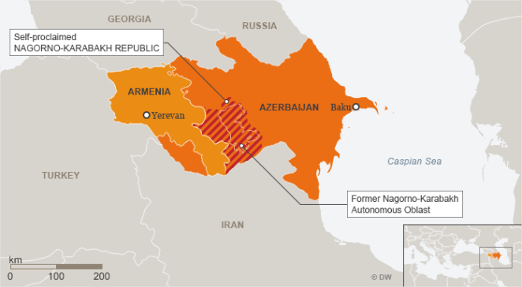

Alto carabaque - Armênia e Azerbaijão
HISTÓRICO E INÍCIO
A Arménia e o Azerbaijão fazem parte da região outrora conhecida como “Transcaucásia”, que liga a Rússia ao norte do Médio Oriente e é hoje conhecida como “Sul do Cáucaso”. A região é historicamente conhecida como um território multiétnico e há muito tempo é uma área protegida.
A região de Nagorno-Karabakh, localizada entre a Armênia e o Azerbaijão, tem sido alvo de disputas que remontam pelo menos à época em que ambos os territórios faziam parte do Império Russo.
Neste conflito destacam-se dois grupos étnicos: os armênios e os azerbaijanos. Os armênios eram historicamente uma população majoritariamente cristã, enquanto os azerbaijanos (uma população turca) eram majoritariamente islâmicos. Contudo, o conflito não pode ser atribuído a razões puramente religiosas ou étnicas.
Por se tratar de uma região multiétnica, a definição de fronteiras tem sido e continua a ser uma questão delicada.A divisão territorial tem sido um problema desde o início do século XX, quando os territórios que hoje conhecemos como Arménia, Geórgia e Azerbaijão ainda faziam parte do Império Russo. Porém, por obedecerem às ordens do Império, a situação foi controlada. Foi só com a dissolução do império que controlava a região após a Revolução Russa de 1917 que o povo da Transcaucásia teve a oportunidade de conquistar a independência no ano seguinte.
No entanto, esta independência conquistada levou a
outro
impasse. Sem
nenhum governo de alto nível capaz de desempenhar o papel desempenhado
pelo
Império Russo
– controlando as negociações – tanto a Arménia
como o
Azerbaijão
reivindicam o território de Karabakh. Embora este período
não tenha sido
longo
(1918-1922), foi durante este período que os azeris e os armênios
começaram
a ocupar a
região de uma forma específica. Enquanto os azeris localizavam-se,
em sua maioria,
no
território plano daquela área, os armênios majoritariamente
ocupavam a
região
montanhosa: o “Alto Carabaque”
No entanto, em 1922, o governo concentrou
novamente o poder
no
Cáucaso.
Com o surgimento da União Soviética, a
Arménia e o
Azerbaijão
tornaram-se
posteriormente repúblicas soviéticas e, neste
contexto, as disputas na
região ficariam
novamente sob controle. Na verdade, foi sob a
administração
soviética que
foram
demarcados os territórios atualmente ocupados pelos dois
países.
A região e Karabakh foram
posteriormente colocadas
dentro do
Azerbaijão por Stalin, que na altura era membro do
chamado Comissariado do Povo
das
Nacionalidades, o
órgão responsável por lidar com grupos
étnicos
não-russos. No
entanto, a
maioria do grupo étnico da região continua a ser
arménia.
Posteriormente, a
região de Nagorno-Karabakh foi chamada de oblast –
isto é, uma
região
autônoma, mas ainda sob as ordens de Moscou – mas
permaneceu dentro do
território da
República Soviética do Azerbaijão.

Em 1991, a União Soviética
entrou em colapso e
as
Repúblicas Soviéticas da Arménia e do
Azerbaijão tornaram-se
independentes. Os
armênios que ocuparam a zona montanhosa viram o incidente
como uma oportunidade
para
alcançar a
independência. A operação foi apoiada por
Yerevan (capital da
Armênia), mas
rejeitada pelo governo do Azerbaijão. Foi realizado um
referendo, os azerbaijanos
abstiveram-se e a
maioria votou a favor do estabelecimento da República de
Nagorno-Karabakh, mais
tarde
conhecida como
República de Artsakh. O conflito reacendeu-se em Nagorno-Karabakh,
matando cerca
de 30 mil
armênios e azerbaijanos entre 1991 e 1994. A guerra cessou
em Maio de 1994, quando
os
governos
envolvidos nos combates assinaram um acordo de
cessar-fogo. No entanto, mesmo após a assinatura
do cessar-fogo,
conflitos
menores
continuaram a ocorrer na região e, com o passar do tempo,
surgiram propostas para
resolver os
conflitos. Uma das mais notáveis foi aquela desenvolvida
pelo Grupo de Minsk,
criado pela
OSCE
(Organização pela Segurança e
Cooperação Europeia),
onde,
dentro de
alguns tópicos, é feita a seguinte proposta: Contudo, ambos países não
aceitaram os termos
propostos
por
acreditarem que estariam sofrendo desvantagens. De um lado, o
Governo de Baku (capital
do
Azerbaijão)
defende as leis que determinam a sua soberania na região
de Nagorno-Karabakh. De
outro,
Yerevan e
Artsakh acreditam que o território pertence
historicamente ao povo
armênio
ENVOLVIMENTO DA TURQUIA E
RÚSSIA O Cáucaso é uma região rica
em
petróleo, o
que
além de enriquecer alguns países – como
é o caso do
Azerbaijão
–
desperta o interesse de Estados vizinhos. Por isso, a
região constantemente serve
como
palco para
projeções de poder, sobretudo por parte de
Governos mais próximos
da
região.
Ao falar de turcos e azeris, é importante
ter em mente
que isso
significa a
existência de alguns fatores que geram
identificação entre esses
povos.
Além de
seus idiomas serem parecidos, ambos são países
muçulmanos –
embora o
Azerbaijão seja um país tradicionalmente Xiita,
enquanto que a Turquia
é
majoritariamente Sunita. Historicamente, o Azerbaijão tem
como seu principal
apoiador a
Turquia. O
país, que diversas vezes fecha suas fronteiras com a
Armênia como forma de
demonstrar apoio ao
Azerbaijão, possui, inclusive, um passado conflituoso com
a Armênia.
Já do lado Armênio, a Rússia
é o
principal
aliado. A
religião pode ser entendida como um dos fatores que unem
esses dois Estados, uma
vez que
o
país do Cáucaso é historicamente
cristão em uma
região de
maioria
islâmica. A Federação Russa, portanto,
utiliza-se de questões
como
esta para
projetar seu poder na região vizinha e manter uma
relação
próxima
com a
Armênia.
A Rússia é, há muito tempo,
um dos
principais
exportadores de
gás natural da Europa. De acordo com dados do IBP
(Instituto Brasileiro de
Petróleo e gás), em 2018 o
país foi o
segundo maior exportador de gás
natural,
atrás
apenas dos Estados Unidos. O Azerbaijão, por sua vez,
é peça-chave
no
mercado
energético. Além de ser um dos maiores
produtores de petróleo
e
gás
natural da região, existe uma importante rede de
oleodutos que atravessam o
território
azerbaijano em direção à Turquia,
país que há um
tempo vem
aumentando o
seu protagonismo no cenário energético.
Portanto, o apoio da Rússia e da
Turquia tem
objetivos
próprios e
não apenas a disputa de Nagorno-Karabakh. A Turquia e a
Rússia utilizam
fatores
como a etnia e
a religião para intervir em tais questões, visando
expandir a sua
influência
e
projeção de poder em áreas que estejam em
linha com os seus
interesses
comuns e
traduzi-los em medidas práticas tomadas pelo
governo. O atual presidente turco, Recep Tayyip
Erdogan, baseia-se no
chamado
neo-otomanismo. Esta política externa alude a
impérios históricos,
cujo
principal
objetivo era ter maior influência na região e
aumentar a influência
das
grandes
potências. Portanto, uma das formas de colocar em
prática esta
política
externa é
fornecer apoio militar ao Azerbaijão. A Rússia, que tem boas
relações com o
Azerbaijão mas
partilha o mesmo objectivo de projectar poder no Cáucaso,
interveio no conflito
ao lado
da
Arménia. O país faz parte da
Organização do Tratado de
Segurança Coletiva
(CSTO), uma aliança militar de várias
ex-repúblicas
soviéticas.
Além de
ser considerado um dos principais negociadores entre os
países, a Rússia
mantém uma
base militar na Armênia como forma de exercer
influência no
território. O CONFLITO NA ATUALIDADE O conflito recomeçou no dia 19/09/2020,
quando o
Ministério da Defesa do Azerbaijão comunicou o
início de
operações
“antiterroristas” na região e apelou à
rendição
dos
líderes
separatistas armênios, quebrando o cessar-fogo de 1994. O
Azerbaijão afirma
que
lançou a
operação em resposta à morte de seis
pessoas, incluindo quatro
policiais,
em duas
explosões de minas terrestres na manhã do dia 19.
Autoridades de defesa da região
separatista disseram
que
militares do
Azerbaijão "violaram o cessar-fogo com ataques de
artilharia e
mísseis". Outros representantes armênios
falaram de uma
“ofensiva
militar em
grande escala” e afirmaram que houve várias mortes,
incluindo mulheres e
crianças,
embora o Azerbaijão negue ter civis como alvos.
Até o momento, estima-se que
aproximadamente 5 mil pessoas
foram
vítimas dos
confrontos que tiveram
início no ano de 2020,
porém,
existe certa
dificuldade na apuração exata desses
números, já que existe
uma
batalha de
narrativas que permeia esse conflito. Da mesma forma que o
Azerbaijão tende a
não
reconhecer o
número de mortos declarado pelo Governo Armênio,
este não concorda
com os
números
apresentados pelo Governo azeri.
A ofensiva do Azerbaijão em 2023 foi uma
ação
militar
lançada em setembro contra as forças
armênias no Alto Carabaque,
culminando
em uma
vitória rápida e significativa. O
Azerbaijão retomou o controle
total da
região,
levando à rendição das forças
separatistas armênias e
à
dissolução da autoproclamada República de
Artsaque. Como resultado,
houve
um
êxodo em massa de armênios que viviam na
região, e o
Azerbaijão
consolidou seu
domínio territorial sobre o Alto Carabaque. A comunidade
internacional, incluindo
Rússia e
potências ocidentais, tem tentado mediar o processo de
paz, mas a segurança
dos
armênios
remanescentes e a desconfiança entre as partes ainda
são grandes
obstáculos
para a
estabilização da situação.
CURIOSIDADES
NOTÍCIAS RELACIONADAS